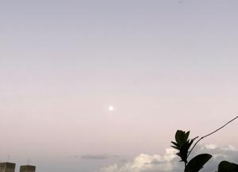

うるがいの話 ある日
最新: ドラマ【うるがいの話 ある日】とは 一日だけのプログです
『うるがいの話』の最新一日だけのプログで、通信料が少なく経済的だ。カニの画像をクリックすると全ての日付が載る『うるがいの話』サイトを表示します
|
|
【うるがいの話】 うるがい(ｳﾙｶﾞｲ urugai)とは、『もずくがに』の名前でとても大きくなります。 |
|---|---|
|
|
【カミマヤーの話】 猫のことを方言でマヤーといいます。カミマヤー（kamimayaa）とは、神の猫のことです。 |
|
【たながぁの音楽】 たながぁ（ﾀﾅｶﾞｰtanagaa）とは手長えびのことで、何種類かあり大きいのは車 エビぐらいになります。 |

|
【ぶながぁの話】 ぶながー(bunagaa)とは、赤い髪の毛、赤い身体、そして身長は１ｍ２０ｃｍ ぐらい、川の蟹を食べているの目撃された。場所は沖縄県国頭郡大宜味村のと ある村僕の隣近所に住んでいる爺さんから、聞いた話です。 |
|
|
【ギーマの話】 ギーマ(giima)とは、山原の里山に咲くスズランに似た、 花を付けます。実は食べられます、 気が付くと口の周りが紫になっています。 |
2022年02月16日 (水）ドラマ
15:46

ドラマって一度見ると 見続けなくてはならなくなるので その意味で面白そ
うなドラマほど 見ないようにしているんですが 最近は月９の『ミステリと
いうなかれ』 を嫁氏の誘いで見てしまいまして、案の定ハマりました。そん
なワケで整くん的に始めてみました。（笑）
・・・ついでにそのあとの ドクターホワイトの 浜辺美波がかわいいので
観たい気もしますが 日々の仕事もあるので やめました。（笑）
昨日のよる『ドクター・ホワイト』の録画を見ている最中に、とあるメルマガ
のメールの着信した内容である。 『ミステリというなかれ』は知らないが
『ドクター・ホワイト』という民放のドラマがある、番宣で浜美枝さんが主演
とあった。お、あの『００７は二度死ぬ』でボンドガールを務めた浜美枝さん
が出るのか、いつもは民放のドラマはあまり見ないが、見てみたい。ここ前「
生きて、ふたたび 保護司・深谷善輔」で浅丘ルリ子さんの壮絶な演技（墓石
に抱きつく）に感動したばかりだったので・・。録画してみると、ん！、違う
人？、なんと主人公の名前は、浜辺美波紛らわしい、なんでこんなドラマみて
いるの、ん、浜美枝さんがでていると思ったから・・。ヨメにバカにされた。
でも、ドラマは面白い、浜辺美波さんはマンガとかぶっているようにかわいい
。しかし、作家もスゴイもんだ。最近読んだ本で狂犬病は助からないと書いて
あり、狂犬病は怖いんだと思ったばかりである。今週の月曜日の放送ではそれ
を救うのである。浜辺美波を演じる主人公の名前は、白夜である、フと先月末
に観た映画『ホワイト・ナイツ（白夜）』と繋がっていることに気が付く。

昨日の夜、動画研修の講師から、メッセージが流された。
【Premiere Proを動かすための最低スペック】
この研修の概要説明で以下のリンクをお伝えしてはいましたが、
パソコンが古いためにPremiere Proがうまく動かない事象が何件か起こって
います。
今週から、実機を使って指定された一分間の動画をユーチューブにアップする
課題が出た。昨日の夜から仕掛かる、私の古いパソコンでもうまく動かないの
ですこしヒヤリとしたが、今朝の７時過ぎに課題を終えた（徹夜ではない）６
番目だった。この研修６０名近くいる筈だが、自習は大変だろうな、対応する
講師も。
１５時４１分 ビットコインの総資産 ￥１４、７８６↑